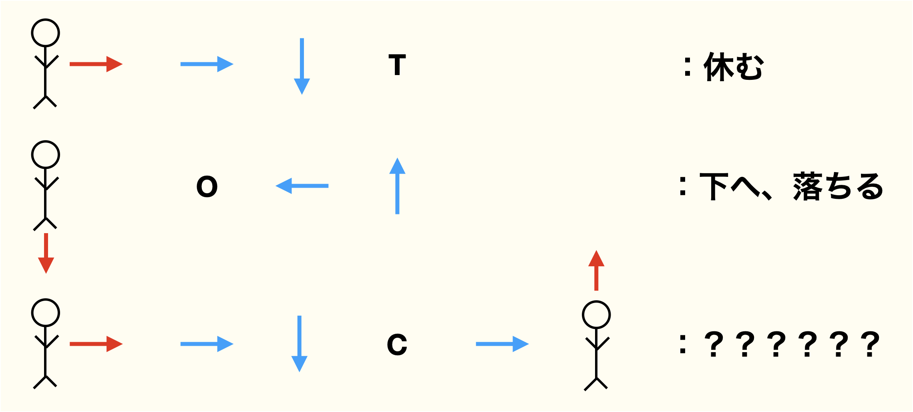

これまでの謎をすべて解き明かした翌朝。
コナンたちのもとに、また予告状が届いた。
🌌《宇宙で一番優しい音》第6話 方向の法則（ほうこうのほうそく）

……また来たわね。

コナン
“方向を読め”……か。今回もルールを見抜けば解けるはずだ。
💌 怪盗キッドの予告状
最後の鍵は、“宇宙の方向”にある。
すべての矢印が示す方角を読み解けば、
ひとつの答えが導かれるだろう。
――月下の奇術師より 🌙
テーブルの上に置かれたのは、赤と青の矢印が入り混じる奇妙な図だった。
